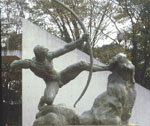

呂清夫 撰文

過去常有美術圈外的朋友問我同樣的一個問題，那就是，你覺得畫模特兒的滋味如何?在此不妨公開回答一下，在剛開始的時候，老賣說，確實相當的好奇，但是很快的就趨於平淡，終至把對象看成靜物畫中的青菜蘿蔔一般，在那個時候，人體不過是天地萬物中的一種，祇是人體的結構比其他的物體更為精緻，不論男女，說它們是上帝的傑作均無不可，因此，人體才被希臘人敢為創作的主要題材，希臘人甚至把人體當作天地間最理想的形象，所以希臘諸神便當以赤裸的人體表現出來。及至文藝復興時代，米開蘭基羅還用赤裸的人群填滿了整個著名的西斯丁教堂，這不但沒使教堂傷風敗俗，反而使之更加神聖而莊嚴。在這種背景之下，西方的運動場在為運動員塑像留念的時候，便很自然地採用了裸體的形象，有些運動場 (如羅馬) 還用這種裸像環繞於四周，有如遍插國旗一般，因為裸像是那麼美、那麼純潔、那麼神聖。其實不僅西方有裸像藝術，在東方亦屢見不鮮，如印度的很多寺廟便可看到無數的裸像，而且密密麻麻地被裝飾於光天化日之下。又如日本的浮世繪也有很多裸畫出現，倒是歷代中國，卻很少看到裸體畫，．所以在國外所見的一些「世界裸體美術全集」之中，雖然各國作品雜然並陳，但是並找不到中國人的作品，這誠然是個奇妙的現象。●傳統社會容忍裸體限度考其原因，或許由於中國過去的禮教束縛太嚴使然，於是「非禮勿視」便成為讀書人的圭臬，袒裼裸裎的畫面自被視為大逆不道，這如果行之過度，便容易流為假道學。其實中國並非完全沒有裸體畫，我在國外便看過從前「金瓶梅」的裸體插圖，不過那種畫與其說是裸體晝，不如說是春晝，因為其中的描寫實在太過「新潮」 。人的心理有時很怪，越是禁止你看，你越是想看，而既然看了，就乾脆把它看個澈底，閩南話所謂「嚴官府出大賊」就是這個道理。這種畫的出現有可能是對禮教束縛過嚴的一種反動，其心理上的不平衡自然在所難免，但其中也充分反映出傳統社會容忍裸體的限度。在國內，公園裸像被指指點點的例子已經不止發生過一次。最近台南體育公園的裸像據說有些民眾主張把它穿上褲子，也有人主張用東方佛像的手法重雕一尊穿褲子的塑像。我沒到過那個公園，不如園內氣氛如何?但如果說是體育公園，應該便有體育場，而現代化的體育場顯然是西方的東西，在這種西式的空間及西式的運動氣氛之中配上西式雕像應該較為調和，如果雕像穿上褲子，一方面總覺得不是那麼回事，一方面在美感上總要失掉許多，那可能使雕像變成了說明用的模型，而不是藝術品。其次，如果使用佛像的手法去為運動員塑像，那麼放在國術訓練場所自然非常貼切，但是如果放在西式的運動所之中，便覺格格不入。台北新公園灰白色的希臘式建築 (即博物館)旁邊出現大紅大綠的中式亭台便覺難以調和，何況兩者又在同一個圍牆之內。倒是南海學園內的幾座建築配合得十分和諧，這完全要看它們在色彩、造形上的配合與否來決定。●脫了再「穿」 ，不如不 「穿」據說面對雕像要穿上褲子的建議，體育公園的主管曾一笑置之，並認為多此一舉，他好像還進一步說，國人的觀念有待於突破，這不能不說是一種開明的看法。事實上一個雕像如果原本為裸體而塑造的話，那麼臨時再給它穿上褲子時，在整體的配合上可能不無間題，因為藝術講究整體的照應，臉部的線條可能與臀部的凹凸遙相呼應，現在如果臨時穿上褲子，便要使臉部的線條顯得「落花有意，流水無情」 了。所以如果要穿褲子，最好重新塑過，俾使全身的線條凹凸能夠擊頭則尾至，擊尾則頭至。話雖如此，但我覺得，雕像如果一開始就穿上褲子倒還沒什麼，可是現在脫了以後又穿起來便可能有不良的社教作用，因為我們過去早已陸陸續續有裸像出現於展覽會等公共場所之中，一般民眾早已開始接觸裸像藝術，政府對於裸像藝術也一向持著開明的態度。在這種情況之下，我們如果突然要把裸像穿上褲子，一般民眾或將以為，過去沒穿褲子的雕像不對的，是有傷風化的，是政府早該禁止而沒有禁止的，這對我們多年來的美育努力而言，可能造成莫大的打擊，在未來的美育推廣上言，也可能變成一塊不小的絆腳石，而美育或情感教育對我們偏重智育的社會來說，又是多麼迫切需要啊！祇不知目前那座雕像的命運如何?但是不管結局怎樣，裸像與褲子對我們似乎永遠是個老問題，因此有必要把它弄個水落石出，否則將來還是會有同樣的爭論出現。